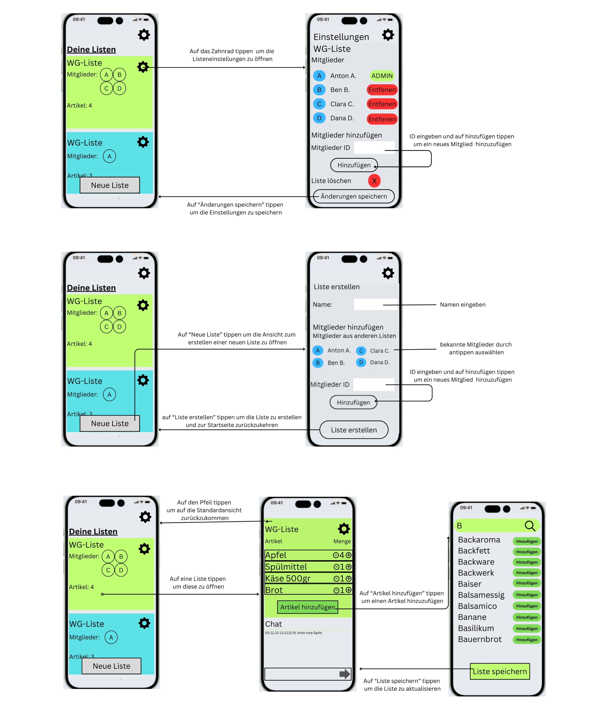

Übersicht
Das Modul „Interface- und Interaktionsdesign“ kombiniert fundierte Theorie mit praxisnahen Projekten, um effektive und intuitive Benutzeroberflächen zu gestalten.
Inhalte
- Gestaltungsprinzipien: Einführung in die 8 goldenen Regeln von Ben Shneiderman und Anwendung der Gestaltprinzipien (z. B. Nähe, Ähnlichkeit, Geschlossenheit).
- Nutzerzentriertes Design: Ansätze wie Human-Centered Design (HCD) zur Problemlösung und iterativen Entwicklung.
- Prototyping: Entwicklung von Low- und High-Fidelity-Prototypen, begleitet durch Nutzertests und Optimierungen.
- Farbwahrnehmung: Gestaltung für verschiedene Farbwahrnehmungen, einschließlich Berücksichtigung von Farbblindheit.
- Service Design: Ganzheitliche Betrachtung von Nutzererfahrungen durch Tools wie Journey Maps und Stakeholder Mapping.
Ablauf
-
Theoretische Grundlagen:
- Einführung in Designprinzipien wie Konsistenz, Fehlertoleranz und visuelle Hierarchie.
- Nutzung von Modellen wie Fitts’ Law und Gestaltprinzipien zur Analyse von Benutzeroberflächen.
-
Praktische Übungen:
- Analyse alltäglicher Interfaces, z. B. Lichtschalter-Mapping oder Türgriffe.
- Erstellung von Prototypen für Web- und Mobilgeräte, inklusive Usability-Tests.
-
Projekte:
- Stud.IP mobil: Entwicklung eines mobilen Interfaces für Stud.IP.
- Themenbasierte Apps: Design von Apps zu Themen wie Food-Sharing oder Emotions-Tagebüchern.
Ziele des Moduls
Das Modul vermittelt die Grundlagen zur Gestaltung intuitiver und nutzerzentrierter Interfaces. Studierende lernen, Nutzerbedürfnisse zu analysieren, gestalterische Prinzipien anzuwenden und Prototypen iterativ zu verbessern.
Beispiel
Erstellen eines Prototyps für eine gemeinsame Einkaufplanung
